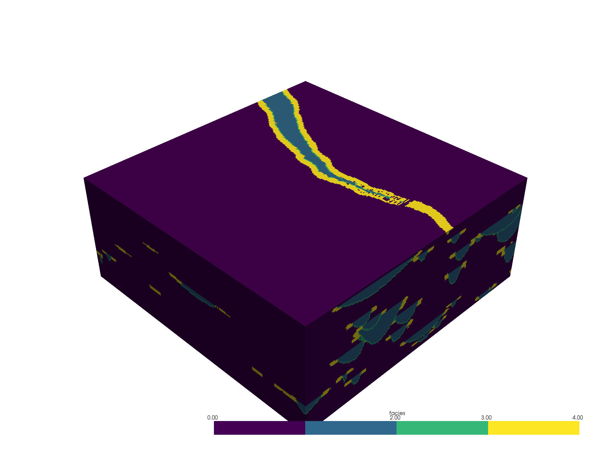
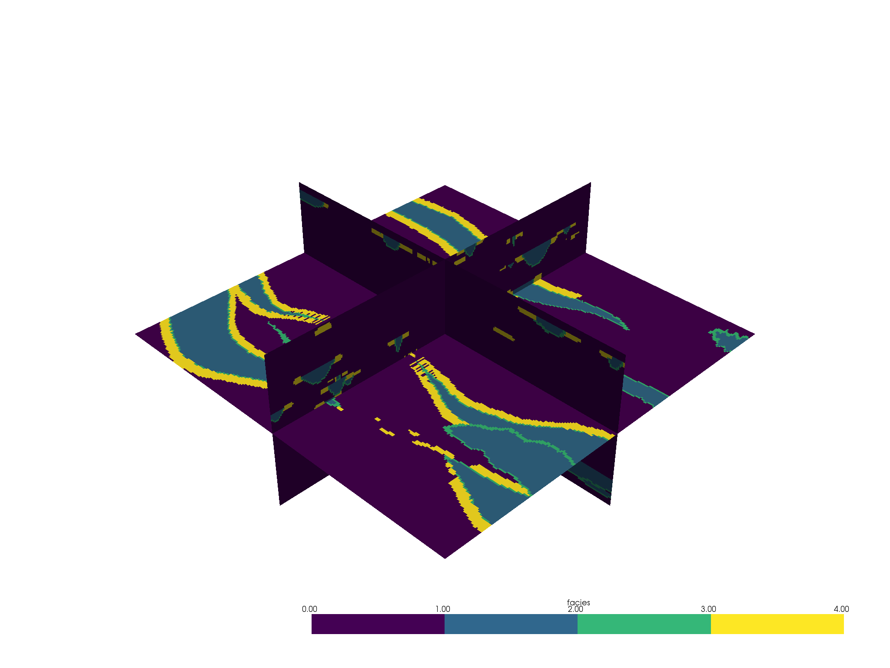
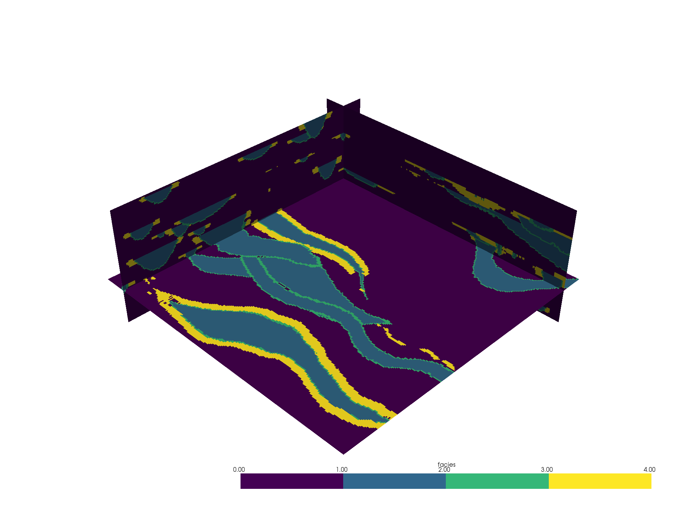
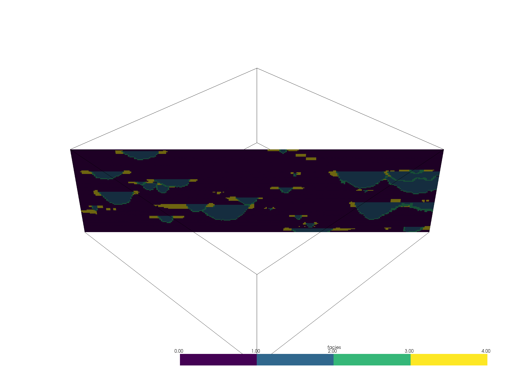
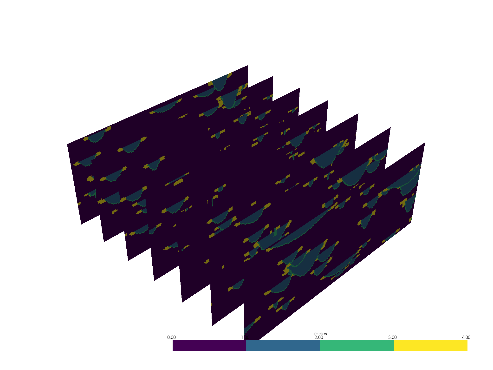
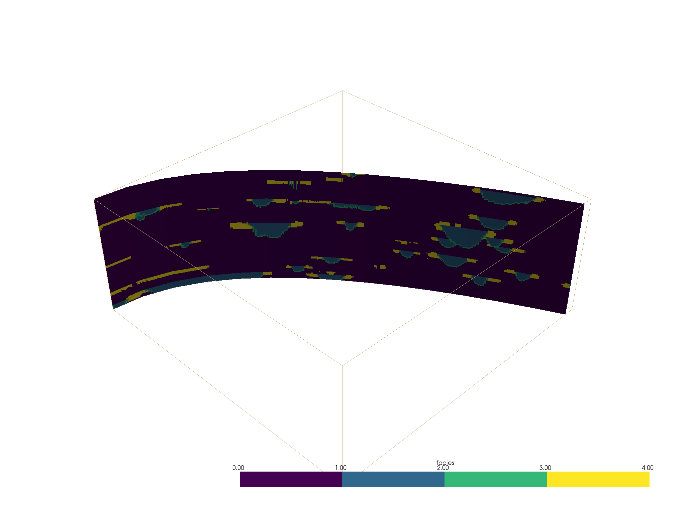
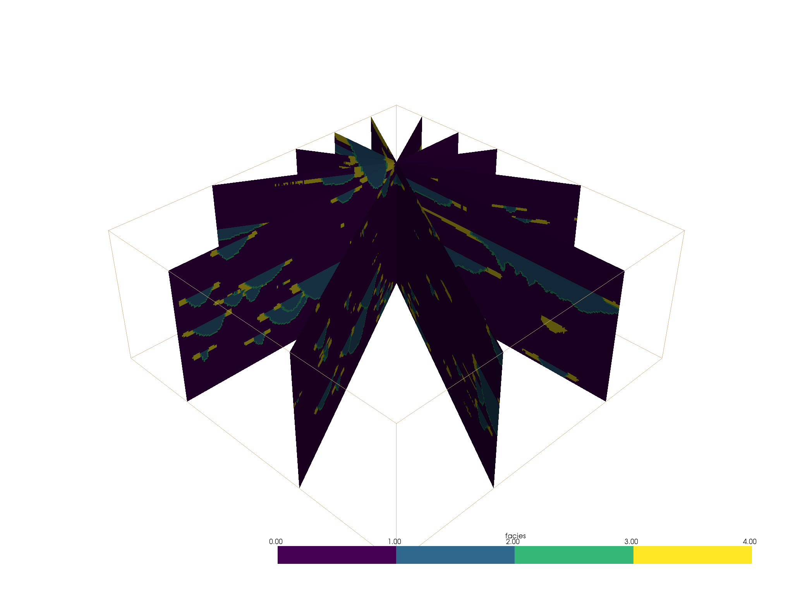

Note
Click here to download the full example code
Slicing¶
Extract thin planar slices from a volume
# sphinx_gallery_thumbnail_number = 2
import pyvista as pv
from pyvista import examples
import matplotlib.pyplot as plt
import numpy as np
PyVista meshes have several slicing filters bound directly to all datasets. These filters allow you to slice through a volumetric dataset to extract and view sections through the volume of data.
One of the most common slicing filters used in PyVista is the
pyvista.DataSetFilters.slice_orthogonal() filter which creates three
orthogonal slices through the dataset parallel to the three Cartesian planes.
For example, let’s slice through the sample geostatistical training image
volume. First, load up the volume and preview it:
mesh = examples.load_channels()
# define a categorical colormap
cmap = plt.cm.get_cmap("viridis", 4)
mesh.plot(cmap=cmap)

Out:
[(534.8076211353316, 534.8076211353316, 459.80762113533166),
(125.0, 125.0, 50.0),
(0.0, 0.0, 1.0)]
Note that this dataset is a 3D volume and there might be regions within this volume that we would like to inspect. We can create slices through the mesh to gain further insight about the internals of the volume.
slices = mesh.slice_orthogonal()
slices.plot(cmap=cmap)

Out:
[(534.8076211353316, 534.8076211353316, 459.80762113533166),
(125.0, 125.0, 50.0),
(0.0, 0.0, 1.0)]
The orthogonal slices can be easily translated throughout the volume:
slices = mesh.slice_orthogonal(x=20, y=20, z=30)
slices.plot(cmap=cmap)

Out:
[(534.8076211353316, 534.8076211353316, 459.80762113533166),
(125.0, 125.0, 50.0),
(0.0, 0.0, 1.0)]
We can also add just a single slice of the volume by specifying the origin
and normal of the slicing plane with the pyvista.DataSetFilters.slice()
filter:
# Single slice - origin defaults to the center of the mesh
single_slice = mesh.slice(normal=[1, 1, 0])
p = pv.Plotter()
p.add_mesh(mesh.outline(), color="k")
p.add_mesh(single_slice, cmap=cmap)
p.show()

Out:
[(534.8076211353316, 534.8076211353316, 459.80762113533166),
(125.0, 125.0, 50.0),
(0.0, 0.0, 1.0)]
Adding slicing planes uniformly across an axial direction can also be
automated with the pyvista.DataSetFilters.slice_along_axis() filter:
slices = mesh.slice_along_axis(n=7, axis="y")
slices.plot(cmap=cmap)

Out:
[(531.0336740029763, 531.0336740029763, 456.0336740029763),
(125.0, 125.0, 50.0),
(0.0, 0.0, 1.0)]
Slice Along Line¶
We can also slice a dataset along a pyvista.Spline() or
pyvista.Line() using the DataSetFilters.slice_along_line() filter.
First, define a line source through the dataset of interest. Please note that this type of slicing is computationally expensive and might take a while if there are a lot of points in the line - try to keep the resolution of the line low.
model = examples.load_channels()
def path(y):
"""Equation: x = a(y-h)^2 + k"""
a = 110.0 / 160.0 ** 2
x = a * y ** 2 + 0.0
return x, y
x, y = path(np.arange(model.bounds[2], model.bounds[3], 15.0))
zo = np.linspace(9.0, 11.0, num=len(y))
points = np.c_[x, y, zo]
spline = pv.Spline(points, 15)
spline
| Header | Data Arrays | ||||||||||||||||||||||||||
|---|---|---|---|---|---|---|---|---|---|---|---|---|---|---|---|---|---|---|---|---|---|---|---|---|---|---|---|
|
|
Then run the filter
slc = model.slice_along_line(spline)
slc
| Header | Data Arrays | ||||||||||||||||||||||||||
|---|---|---|---|---|---|---|---|---|---|---|---|---|---|---|---|---|---|---|---|---|---|---|---|---|---|---|---|
|
|
p = pv.Plotter()
p.add_mesh(slc, cmap=cmap)
p.add_mesh(model.outline())
p.show(cpos=[1, -1, 1])

Out:
[(534.8076211353316, -284.80762113533166, 459.80762113533166),
(125.0, 125.0, 50.0),
(0.0, 0.0, 1.0)]
Slice At Different Bearings¶
From pyvista-support#23
An example of how to get many slices at different bearings all centered around a user-chosen location.
Create a point to orient slices around
ranges = np.array(model.bounds).reshape(-1, 2).ptp(axis=1)
point = np.array(model.center) - ranges*0.25
Now generate a few normal vectors to rotate a slice around the z-axis. Use equation for circle since its about the Z-axis.
increment = np.pi/6.
# use a container to hold all the slices
slices = pv.MultiBlock() # treat like a dictionary/list
for theta in np.arange(0, np.pi, increment):
normal = np.array([np.cos(theta), np.sin(theta), 0.0]).dot(np.pi/2.)
name = 'Bearing: {:.2f}'.format(np.rad2deg(theta))
slices[name] = model.slice(origin=point, normal=normal)
slices
| Information | Blocks | |||||||||||||||||||||||||||||||
|---|---|---|---|---|---|---|---|---|---|---|---|---|---|---|---|---|---|---|---|---|---|---|---|---|---|---|---|---|---|---|---|---|
|
|
And now display it!
p = pv.Plotter()
p.add_mesh(slices, cmap=cmap)
p.add_mesh(model.outline())
p.show()

Out:
[(534.8076211353316, 534.8076211353316, 459.80762113533166),
(125.0, 125.0, 50.0),
(0.0, 0.0, 1.0)]
Total running time of the script: ( 0 minutes 48.226 seconds)